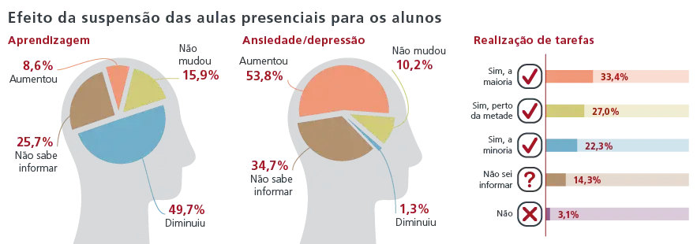
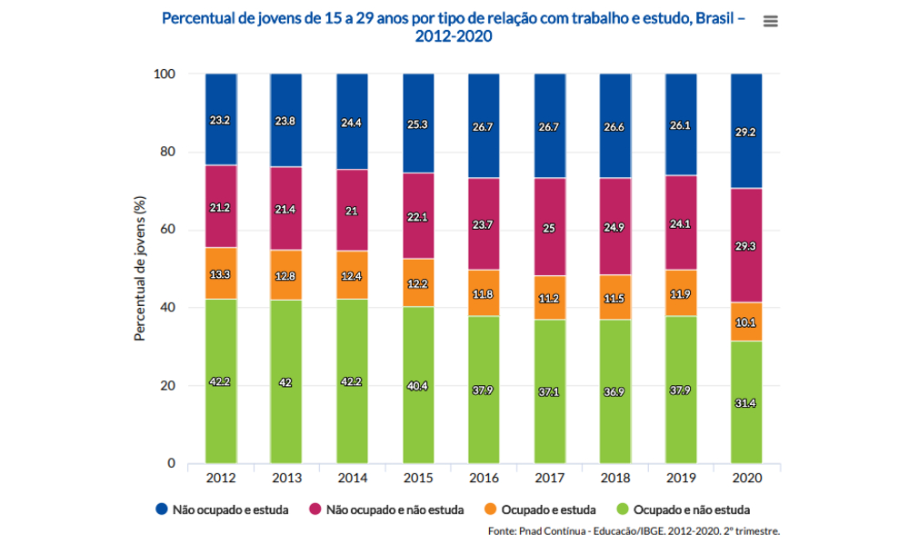

Pesquisa
A pesquisa, denominada Resposta Educacional à Pandemia de Covid-19 no Brasil, aponta que pouco mais de 53% das escolas públicas conseguiram manter o calendário letivo original no ano passado. No ensino privado, cerca de 70% das escolas conseguiram manter a previsão inalterada.

Ajuste no calendário letivo
O levantamento mostra que 99,3% das escolas brasileiras suspenderam as atividades presenciais. Em função disso, parte delas também ajustou a data do término do ano letivo de 2020, visando o enfrentamento das consequências pedagógicas decorrentes dessa suspensão. As escolas públicas sentiram uma necessidade maior de fazer esta adequação.
Acesso à internet
A mesma desigualdade é verificada na distribuição do acesso à rede de internet para uso exclusivamente administrativo dos estabelecimentos públicos. Na região Norte do Brasil, mais de quatro em cada cinco (81,5%) escolas públicas não acessa à internet para esta forma de uso e pouco menos de três em cada quatro se encontra na mesma situação na região Nordeste (73,8%), sendo estas as regiões de mais baixo acesso à internet, mesmo que para fins exclusivamente administrativos e não pedagógicos. Cabe ressaltar, entretanto, que a ausência deste modo de uso da rede internet é a realidade média de pouco mais de um terço das escolas das regiões Sudeste (38,2%), Sul (30,3%) e Centro-Oeste (36,9%).
O que os estudantes pensam?
Com 33 mil participantes, “Juventudes e a Pandemia do Coronavírus”, pesquisa realizada pelo CONJUVE (Conselho Nacional da Juventude) em parceria com Em Movimento, Fundação Roberto Marinho, Mapa Educação, Porvir, Rede Conhecimento Social, Unesco e Visão Mundial faz um sério alerta para gestores educacionais: quase 30% dos jovens pensam em deixar a escola e, entre os que planejam fazer o Enem (Exame Nacional do Ensino Médio), 49% já pensaram em desistir. Isso tudo porque a maioria sente grande dificuldade de estudar em casa. O que atrapalha não é só de computador e internet rápida para acessar conteúdos e acompanhar as aulas, mas o próprio equilíbrio emocional e a capacidade de organização para estudar.
Impactos Econômicos
Um estudo do Insper (Instituto de Ensino e Pesquisa) sobre o impacto da perda de aprendizado neste ano ao longo da vida dos estudantes aponta que os jovens podem perder R$ 42,5 mil de renda se os conteúdos não forem repostos e eles seguirem para o mercado de trabalho com esses déficits. “Não foi planejado, não houve transição para esse novo modelo. Então, houve perdas e precisamos olhar agora para elas”, disse o economista Ricardo Paes de Barros, que elaborou o estudo, à Folha de S. Paulo.
 